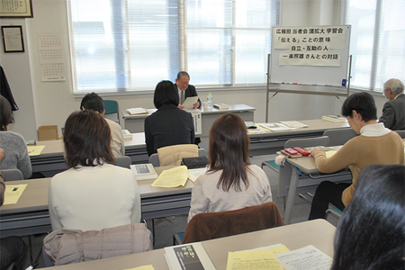
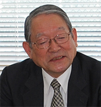

広報担当者会議 拡大学習会「伝えることの意味」を開催しました
2月3日、2014年度埼玉県生協連広報担当者会議の拡大学習会を開催しました。当日は、5会員から広報担当職員はじめ16名が参加しました。

「格差社会」と形容されるように、社会的格差と貧困が拡大している今日、もう一つの道として協同組合が期待されています。そうした中、日本の協同組合運動に大きな足跡を残された一楽照雄氏の「暗夜に種を播く如く」が復刻され、改めて一楽氏が生涯貫かれた協同社会への実践とその営為が見直されました。学習会では、一楽氏とご親交のあった、岩手県生協連会長理事 加藤善正氏に一楽氏の思想と実践をご紹介いただき、今日的な協同組合の役割と重ねて、協同組合を周知していく広報の役割を考えました。
加藤氏は、大学生協、市民生協の設立、事業連合の立ち上げなどに関わって来られたこれまでのご自身の歩みに触れ、学習会のテーマである一楽先生のファンであり、考え方も影響を受けていますと話されました。
戦後70年、日本の大転換に直面する協同組合
いま、これまでの延長ではない、世の中全体として大転換が起きようとしており、協同組合はどう分析し、どう対応するのかと、現状について三つの側面から話されました。
|  |
| 岩手県連会長理事 加藤善正氏 |
最初に、日本国憲法の三大原理（平和、国民主権、基本的人権保障）。
二つ目に、経済的側面での市場競争万能の国づくりについて話されました。
「アメリカのような新自由主義の国づくりは、格差の拡大、貧困の再生産をすすめます。また社会保障制度改革、農業・農協改革では、農産物が下落の中、信用（貯金）・共済事業が切り離されれば、多くの農協が倒産します。さらに中山間地域の限界集落化が進めば、日本農業は崩壊します」と指摘し、農協改革は、他人事でない、同じ協同組合としても、食の自給率や安全の問題など、消費者にとって大事なことと話されました。
三つ目の社会的な問題では、マスコミの変容です。一方的情報が氾濫する中で、「協同組合の価値観（平等・公正・相互扶助・共生・民主主義・社会的弱者の協同）が薄れて来ていないか、私たちが情報を発信する場合、相当な決意でやらないと、多くの組合員はマスコミの報道を信じてしまいそうです。いま日本は深刻な格差社会に向かい、社会的弱者の立場での主張や考え方で抵抗できるのは協同組合です」とし、競争原理でない協同の原理、「いまの市場競争原理と反対の考え方を堅持すべきでしょう」と話し、広報機能を果たしていく上で、原点、哲学を学ぶこと、これが一楽先生の哲学であると話されました。
生協人生55年における5人の「師」
加藤氏は、これまで師と仰ぐ5人の先生がいましたが、その中で一番大きな存在が一楽先生であると話されました。
一楽先生の最初の教え。一楽先生は、盛岡市民生協（現在のいわて生協の前身）の班長会議で150人から200人の組合員を前に、「利息をもらうために組合員として出資金を出すのか!?」、「出資金と資本は違う、出資金は資本ではない」と話しました。また、「産直と産・消提携は意味が違う」という話しを何時も強調されました。「産直」は農作物を商品として捉え、お金での「交換価値」を基盤にしている。しかし、「提携」は商品としてではなく生活必需品の「使用価値」として考えて、提携するものである、という考え方です。
一楽照雄先生の語録
＊世直しの根本は「子どもには自然を、老人には仕事を」である。
＊協同組合は利益を追求する同業者組織ではなく、全人間的な組織である。
＊協同組合思想は、資本の力に対する民衆の抵抗運動を基礎とした生活者の結合から生まれる。
「子どもには自然を、老人には仕事を」～短い言葉ですが、一楽先生の考えをよくあらわしています。
どこへ行く、日本の生協運動
加藤氏は「組合員が組合員を増やせなくなった生協」～いまの日本の生協運動の一番の象徴的な問題だと語り、2012年国際協同組合年（IYC）のスローガン「協同組合はよりよい社会をつくります」といま、本当に言えるでしょうかと投げかけました。「これからの時代に協同組合としてのミッションをいかに実践していけるのでしょうか。私たちは生協運動の原点に帰り、ICAメッセージ（定義・価値・原則）の理念・精神・哲学をどのように活かすか、一楽先生の「自立・互助」の哲学から学び、（いまこそ）一楽先生から学ぶ意味を考えたいものです」と語りました。
一楽照雄氏略歴（1906－1994）
農林中金理事、全中常務理事、協同組合経営研究所理事長、日本有機農業研究会理事長を歴任。
1906年徳島生まれ。1930年東大卒後、産業組合中央金庫入行。1945年より農林中央金庫に。
1958年全国農業協同組合中央会理事就任（常務理事）、1965年辞任。同年3月協同組合経営研究所理事。
1966年協同組合経営研究所理事長。
1971年日本有機農業研究会設立。1994年2月没。
＊広報担当者会議・拡大学習会について
協同組合の活動や、人々の協同の輪をよりいっそう広げていく上で、活動の道筋、思いや願いを伝えていくことは基本のひとつであり、協同組合原則の第5原則（教育、訓練及び広報）でも協同組合を知らせることが定義されています。いま、改めて人から人に伝えること、伝えることの意味を考える機会として開催しました。